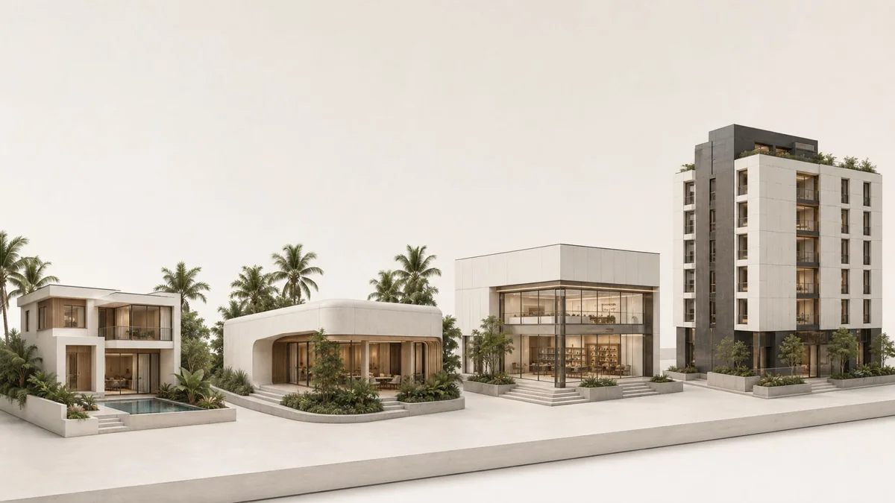

Fjäll Group / Housing at scale / 02
Lombok Housing Initiative
One housing system. A community of possibilities.
Lombok, Indonesia · Mass-scale housingProgramme record
Programme record250+ units in the profileLombok Housing Initiative
- Programme scope
- 250+ units in the profile
- Place
- Lombok, Indonesia
- System
- GX-100 building envelopes
Fjäll’s documented contribution
Regional-government housing programme listed in the company profile
Project-specific dates, delivery status and detailed scope are available from the team.
The profile lists a Lombok programme of over 250 units, centred on rapid, disaster-resilient housing delivery and GX-100 building envelopes. This is the documented programme scope, rather than a claim that every unit is complete.
Mass-scale GX 100 building envelopes

Define the unit mix, land conditions, infrastructure and phasing together. The development brief informs both the home and the wider community.
Discuss a similar projectNo finished brief needed. Start with a place, a question or an ambition.